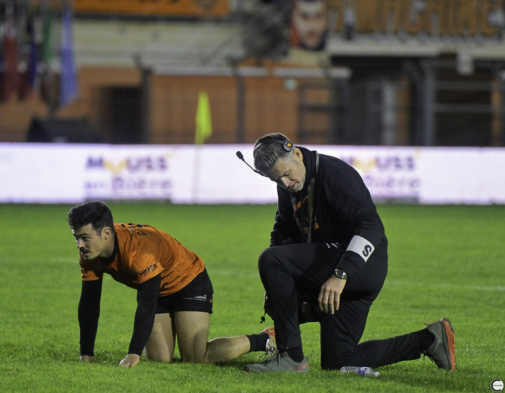
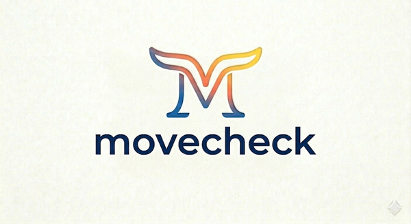

15 ans au bord des terrains professionnels
Kinésithérapeute de formation, je pratique l'ostéopathie en exclusif depuis 2009. Mon exercice s'est construit au contact du haut niveau : ce que j'affine avec les athlètes profite à chaque patient du cabinet.
Prévention des blessures, qualité de mouvement, retour au jeu, suivi après commotion : j'interviens sur tout le parcours du sportif, de l'amateur au professionnel.

Deux façons de travailler ensemble
Séances d'ostéopathie
Une consultation individuelle avec un bilan clinique complet. Mon expérience de kiné et du terrain m'aide à repérer d'où vient la restriction, pas seulement où elle fait mal. Je traite le corps dans son ensemble : articulaire, fascial, viscéral et crânien.
- Bilan postural et fonctionnel complet
- Techniques myofasciales choisies d'après la recherche
- Sportifs, douleurs chroniques, familles, prévention

Programme · à distanceMoveCheck, votre routine de mobilité
Pas un programme générique : une routine construite sur vos propres amplitudes, adaptée à vos troubles et à vos objectifs. En complément d'une séance pour garder les résultats, ou à distance si vous ne m'avez pas encore consulté.
- Vous filmez quelques tests simples chez vous
- J'analyse vos restrictions, avec des tests ciblés si besoin
- Vous recevez votre routine personnalisée par e-mail